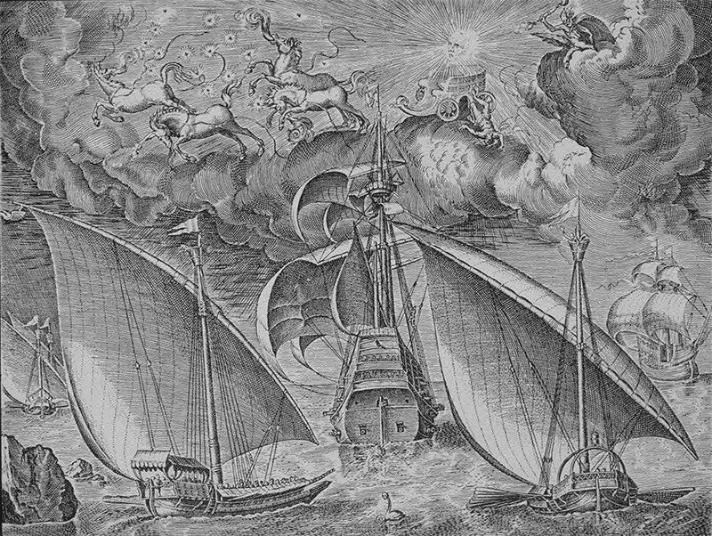

Мы подробно рассказали о событиях 25-28 сентября 1538 года при Превезе, постарались устранить их предвзятые оценки. Для тех, кто захочет продолжить исследование этого вопроса, слабо и противоречиво освещенного в нашей литературе, приведу еще одно краткое описание столкновения флотов Священной лиги и Османской империи, которое я взял из пятого тома многотомной Истории Османской империи Хаммера (Hammer-Purgstall, Joseph von (1774-1856). Histoire de l'Empire ottoman : depuis son origine jusqu'à nos jours. Tome cinquième, Depuis l'avènement de Souleiman I, jusqu'au premier traité de paix de l'Autriche avec la porte ottomane, 1520-1547. 1995). Эта книга есть на Галлике (http://gallica.bnf.fr/), поэтому подлинный текст приводить не буду, ограничусь переводом.

С гравюры Питера Брюгеля
Узнав, что объединенный флот папы, Венеции и Испании готовится атаковать укрепленный пункт Превеза, расположеный на входе в Артский Залив напротив знаменитого мыса Акций, Хайреддин со ста двадцатью двумя кораблями сразу же направился в угрожаемый район. Христиане имели значительное превосходство в силах, имея восемьдесят одну венецианскую галеру, тридцать шесть папских, и пятьдесят испанских.
25 сентября, как только османских флот вошел в Артский залив, христиане встали на якорь перед Превезой. Приватиры Мурад Торгуд, Салих Реис и Гюзедейдж расположились на передовых позициях, имея приказ предотвратить любую попытку высадиться на побережье, которая могла быть предпринята союзниками; однако христиане не выказывали желания брать на себя инициативу. Хайреддин покинул залив через три дня и предложил флоту Лиги бой. Дориа отступил, венецианский адмирал Капелло, который находился в арьегарде, лег на другой галс, чтобы стремительно атаковать корабли османов, стоящие перед Превезой, но Барбаросса решил отступить в залив.
От неожиданной атаки Капелло в рядах галерного флота Хайреддина произошел большой беспорядок, корабли сгрудились у входа в пролив, но в это время Дориа дал приказ своему флоту отойти и направился к мысу Дукато на острове Св. Мавры. 28 сентября состоялся военный совет адмиралов Лиги, на котором Дориа высказал мнение о необходимости избежать сражения, но большинство членов совета выступили против. Оба флота сошлись вновь. Правым крылом турок командовал Тургут, левым крылом – Салих-реис, центром – Хайреддин. Нерешительные маневры Дориа не могли ничего противопоставить открытым и дерзким атакам турецкого адмирала: две венецианских галеры взлетели на воздух, две испанских, одна венецианская и одна папская были захвачены, их экипажи уничтожены. Только спустившаяся ночь остановила победные действия и нанесение еще больших потерь кораблям христиан, которые разделились и покинули воды возле острова Св. Мавры. Хайреддин послал султану, который в это время находился в Ямболе, на Балканах, своего сына с двумя захваченными в плен капитанами и новостью о победе. В Ямболе состоялись празднества по этому поводу, Сулейман признал заслуги Хайреддина и увеличил его ежегодное жалованье на сто тысяч аспров за счет казны.